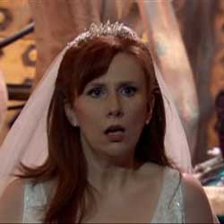

|
| Home The Doctors The Companions The Villians Show History |
Donna NobleDonna Noble is a fictional character in the long-running British science fiction television series Doctor Who. Portrayed by British actress and comedian Catherine Tate, she is a companion of the Tenth Doctor (David Tennant). Originally appearing in the closing scene of the show's 2006 series and as a special guest star in its following Christmas special, "The Runaway Bride", Tate was not expected to reprise her role as Donna. For the programme'sthird series (2007), the Doctor travelled alongside medical student Martha Jones (Freema Agyeman). However, Tate expressed interest in returning to the role, and returned to play Donna for the duration of the fourth series in 2008,[1] and in a subsequent 2009-10 Christmas and New Year's special.[2][3] Within the series' narrative, Donna begins as an outspoken Londoner in her mid-30s, a temp worker from Chiswick whose view of the universe is small in scope. Although she at first finds alien time traveller the Doctor terrifying, their initial encounter leaves her unsatisfied, and she decides to travel alongside him when the next opportunity arises. It is Donna who ultimately saves the universe in the fourth series' conclusion, although tragically at the cost of the memories of her travels with the Doctor. In a contrast to the Tenth Doctor's prior companions, who both harboured romantic feelings for him, Donna and the Doctor shared a strictly friendly relationship, and she does not feel the need to prove herself to travel with the Doctor; the Doctor refers to her as his "best mate". |
|
Ann Marie Skjold Ashly Wilkins |
Content Derived from Wikipedia Doctor Who Page |